Coins specifications
Avers

Diameter (mm): 16.25
Thickness (mm): 1.67
Weight (g): 2.30
Shape: Round
Colour: Copper
Composition: Copper-covered steel
Edge: Smooth
Thickness (mm): 1.67
Weight (g): 2.30
Shape: Round
Colour: Copper
Composition: Copper-covered steel
Edge: Smooth
 | Greece | 12/05 |  | Luxembourg | 26/07 |  | Finland | 28/07 |  | San-Marino | 16/12 |  | Italy | 13/12 |  | Vatican | 16/12 |
| 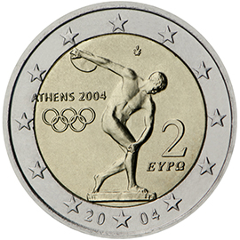 | 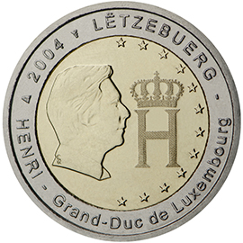 | 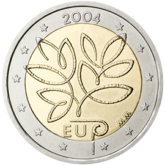 | 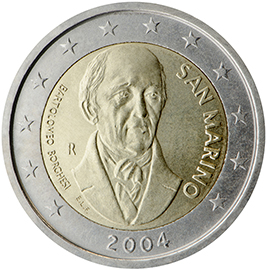 | 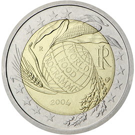 | 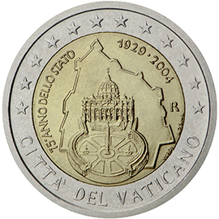 | ||||||||||||
| Olympic Games in Athens 2004 | Effigy and monogram of Grand-Duke Henri |
Enlargement of the European Union by ten new Member States |
Bartolomeo Borghesi (historian, numismatist) |
5th decade of the World Food Programme |
75th anniversary of the founding of the Vatican City State |
||||||||||||
| Олімпійські ігри в Афінах 2004 | Портрет і монограма Великого Герцога Анрі |
Розширення Європейського Союзу десятьма новими державами-членами |
Бартоломео Боргезі (історик, нумізмат) |
50-річчя Всесвітньої продовольчої програми |
75-та річниця створення держави Ватикан |
||||||||||||
| Luxembourg | 15/02 |  | Belgium | 20/05 |  | Spain | 30/06 |  | Austria | 11/05 | | Finland | 25/10 | | Italy | 29/10 |
| 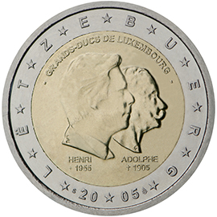 | 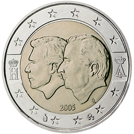 | 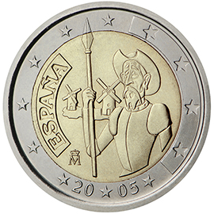 | 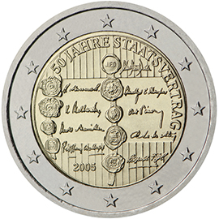 | 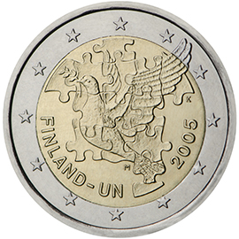 | 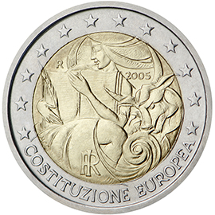 | ||||||||||||
| 50th birthday of Grand Duke Henri, 5th anniversary of his accession to the throne and 100th anniversary of the death of Grand Duke Adolphe |
Belgium-Luxembourg Economic Union |
4th centenary of the first edition of Miguel de Cervantes’ 'The ingenious gentleman Don Quixote of La Mancha' |
50th anniversary of the Austrian State Treaty |
60th anniversary of the establishment of the United Nations and 50th anniversary of Finland’s membership therein |
1st anniversary of the signing of the European Constitution |
||||||||||||
| 50-річчя Великого Герцога Анрі, 5-та річниця його сходження на престол та 100-річчя з дня смерті Великого Князя Адольфа |
Бельгійсько-Люксембурзький економічний союз |
400-річчя перошого видання роману Мігеля де Сервантеса 'Премудрий ідальго Дон Кіхот з Ламанчі' |
50-річчя Австрійського державного договору |
60-річчя Організаціїї Об'єднаних Націй та 50-та річниця членства у ній Фінляндії |
1-ша річниця підписання Європейської конституції |
||||||||||||
| San-Marino | 14/10 | | Vatican | 06/12 | ||||||||||||
| 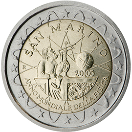 | 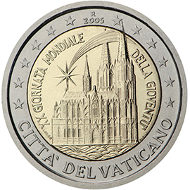 | ||||||||||||||||
| World Year of Physics 2005 | 20th World Youth Day | ||||||||||||||||
| Всесвітній рік фізики 2005 | 20-ий Всесвітній рік молоді (Кельн, серпень 2005) |
||||||||||||||||